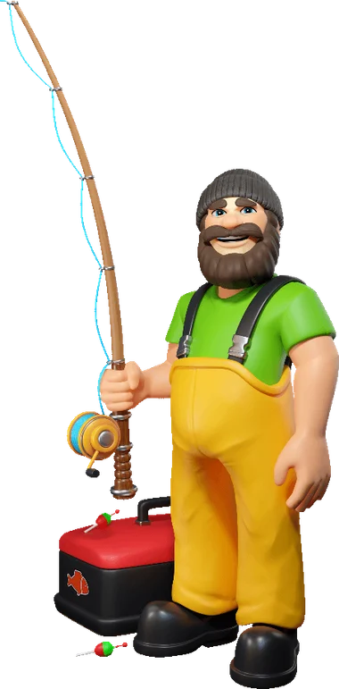

18+ | Play responsibly | T&C apply
Invalid phone number
Email Address
Please enter a valid email address
Choose Welcome Bonus
By tapping Create Account, you agree to our Terms of Service & Privacy Policy. Must be 21+.
Already have an account? Log in